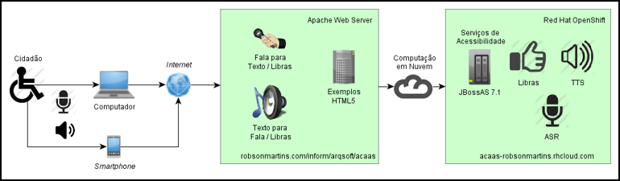

Esta é a página inicial do Projeto AcaaS (Accessibility as a Service - Acessibilidade como um Serviço).
O objetivo deste trabalho é propor uma solução de arquitetura que permita encarar a acessibilidade como um serviço reutilizável, multiplataforma e escalável, de modo a facilitar a implementação de aplicações "acessíveis", aumentando a sua qualidade e reduzindo o custo de desenvolvimento.
Para demonstrar a arquitetura proposta, foram implementados alguns serviços de acessibilidade, usando arquitetura Java EE, implantados em um serviço de infraestrutura na nuvem (Red Hat OpenShift). Todos os serviços operam através de dados JSON sobre requisições HTTP/REST.
Além disso, foram implementados dois exemplos de utilização dos serviços, usando somente HTML5 e JavaScript.
Arquitetura:

Serviços implementados:
| Endereço | Requisição | Resposta | Método | Descrição |
|---|---|---|---|---|
/acaas/tts | text/plain | application/json | GET,POST | Text To Speech (TTS). |
/acaas/tts/media/{id} | audio/wav*,x-flac | GET | Mídia do TTS. | |
/acaas/stt | audio/wav*,x-flac,mpeg | application/json | POST | Speech To Text (STT). |
/acaas/t2libras | text/plain | application/json | GET,POST | Text To Libras (T2Libras). |
/acaas/t2libras/media/{id} | video/ogg*,mp4;image/jpg | GET | Mídia do T2Libras. | |
/acaas/s2libras | audio/wav*,x-flac,mpeg | application/json | POST | Speech To Libras (S2Libras). |
/acaas/s2libras/media/{id} | video/ogg*,mp4;image/jpg | GET | Mídia do S2Libras. |
Serviços utilizados nesta implementação:
- Serviço TTS do Tradutor Google
- Google Speech To Text API
- Dicionário de Libras do Acessibilidade Brasil
- Dicionário Online de Português Dicio
- Dicionário Informal Dicionário inFormal